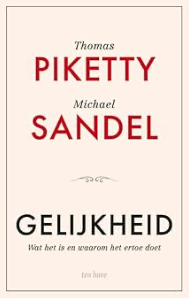

Of in ieder geval ben ik het helemaal eens met je diagnose dat het wrede aan de hedendaagse ideologie van ongelijkheid hem zit in de manier waarop de winnaars op het schild worden gehesen en de verliezers de schuld wordt toegeschoven.*
- Thomas Piketty
DereckThomas Piketty is hoogleraar economie aan universiteiten in Parijs en Londen en werd wereldbekend door zijn boeken Capital in the Twenty-First Century(2013), Capital and Ideology(2019) en zijn redelijk recente Brief History of Equality (2022). Het zijn sociaal-economische boeken waarin hij het verschijnsel gelijkheid in verschillende gebieden en tijdsperiodes onderzoekt. Het zijn prachtige empirische en theoretische studies naar gelijkheid waarin hij steeds laat zien waarom dit verschijnsel er toe doet en dat wij het qua gelijkheid niet als vanzelfsprekend steeds maar beter doen. Als je het echter over een langere periode bekijkt, gaan de westerse landen er wat dat betreft volgens hem uiteindelijk wel op vooruit. Hij verdedigt een democratisch of participerend socialisme, heeft daar uitgesproken en eigentijdse ideeën over en wordt regelmatig door linkse partijen in verschillende landen uitgenodigd om met ze mee te denken over de toekomst.
Michael Sandel is twintig jaar ouder en hoogleraar Politieke Filosofie aan de Harvard Universiteit. Hij is bekend geworden door zijn inspirerende rechtvaardigheidscolleges die hij voor Harvardstudenten geeft en die voor iedereen vrij toegankelijk zijn via YouTube en door allerlei discussie bijeenkomsten die hij als een hedendaagse Socrates leidt. Die colleges en bijeenkomsten gaan over de rechtvaardige en goede samenleving, hoe we daarover denken en hoe we het beter kunnen doen. Dat is helemaal zijn onderwerp. Hierover maakte hij tevens het boek Justice(2009). Sandel schreef daarnaast andere boeken over rechtvaardigheid in de huidige tijd, zoals The Tyranny of Merit. What’s become of the Common Good(de paperback kwam in 2021 uit) en Democracy’s Discontent (dat in 2022 in een nieuwe uitgave uitkwam).
Piketty en Sandel bestuderen allebei in hun werk de kloof tussen arm en rijk en gelijkheid. Op 24 mei 2024 troffen ze elkaar aan de Paris School of Economics en gingen een dag lang in gesprek over gelijkheid, waarom het van belang is en wat er tegen te doen is.
In het begin van het gesprek wordt duidelijk gemaakt dat er drie redenen zijn waar het bij gelijkheid of ongelijkheid om gaat. Allereerst is er een economische reden en die gaat over de universele toegang tot basisvoorzieningen. Hierbij moet je bijvoorbeeld denken aan de toegang tot onderwijsvoorzieningen. Halverwege de twintigste eeuw liepen de Verenigde Staten hier wereldwijd sterk in voorop en dat droeg bij aan hun economische ontwikkeling. De middenklasse zag het belang daarvan in en dat zorgde ervoor dat ze daaraan wilden meebetalen. Er waren in die tijd progressieve belastingheffingen tot zelfs 80-90% om dat streven mogelijk te maken. Het is vooral Piketty die duidelijk maakt dat de lange mars naar meer gelijkheid in drie periodes is te verdelen. De eerste periode loopt tot de Tweede Wereldoorlog en wordt in de westerse wereld gekenmerkt door grote ongelijkheid. Na die oorlog is er een periode waarin de ongelijkheid tussen bevolkingsgroepen via sociaal, economisch en cultureel beleid afneemt. De tijd dus ook dat grote groepen in de samenleving meer onderwijs gingen volgen en de belastingen hoog waren. Na 1980 nemen de verschillen weer toe, mede onder invloed van het neo-liberale beleid. Toen nam ook de toegang tot verschillende basisvoorzieningen af, net zoals de belastingpercentages. Die toenemende ongelijkheid leidt er dan bijvoorbeeld weer toe dat er veel meer middelen naar het hogere onderwijs gaan dan naar het beroepsonderwijs.
Er is een tweede, meer politieke reden waarom praten over gelijkheid volgens Pickettsy en Sandel belangrijk is. Bij deze politieke reden moet je denken aan inspraak, invloed, macht en participatie. Het is nodig om mensen te betrekken bij wat er gebeurt en op allerlei manieren ook te laten deelnemen aan het beslissingsproces. Hier gaat het niet alleen maar om politieke invloed en besluitvorming, maar ook om de invloed en inspraak in de bedrijven. Voor gelijkheid is het belangrijk dat daar niet alleen maar aandeelhouders bij betrokken zijn, maar ook de werknemers van de bedrijven. Hier wordt in het gelijkheidsgesprek overigens niet heel uitgebreid op ingegaan.
Dan is er nog een derde, meer sociale, reden waarom gelijkheid zo belangrijk is en die in het gesprek naar voren wordt gebracht: gelijkheid is belangrijk omdat waardigheid status en respect dat zijn. De afstand in het menselijke verkeer kan op een gegeven moment namelijk te groot worden en dat is niet goed voor een samenleving. Dat is te zien in de meritocratische principes die de laatste decennia zo populair zijn geworden. De principes die de meritocratie aanhangt van de individuele verdienste om zo tot meer gelijkheid te komen, zijn helemaal niet waar te maken. Bovendien is er van die opwaartse mobiliteit die het belooft, helemaal geen sprake. Zou de meritocratie daarin wel slagen, dan heeft ze nog een schaduwzijde omdat ze het algemeen belang schaadt. De succsesvollen van het systeem kijken tegen hun succes aan alsof het hun eigen verdienste is en de verliezers rekenen het zich zelf aan dat het hen niet gelukt is. Het creëert een wereld van hoogmoed en vernedering en heeft aan de polarisatie in de samenleving bijgedragen.
Over het belang van gelijkheid en waarom dat zo belangrijk is, zijn Piketty en Sandel het wel met elkaar eens. Daarbij schuift Piketty vooral de economische en politieke redenen naar voren en Sandel de sociale reden. Dat is vanuit hun eigen werk ook wel te verwachten. Interessante perspectieven bieden ze, maar in hun eigen boeken gaan ze hier veel uitgebreider op in. Meer verrassend wordt het wanneer Sandel redelijk aan het begin van het gesprek de vraag stelt of geld minder belangrijk moeten zijn. Moeten we inkomens en vermogens herverdelen zodat er meer gelijkheid in koopkracht komt of is het beter om de rol van geld minder belangrijk te maken? Volgens Piketty moeten we beide tegelijk doen, zoals historisch ook is gedaan en waar het ook goede resultaten heeft opgeleverd. Piketty zegt dan in dit verband dat we niet alleen zouden moeten nadenken over een minimuminkomen maar ook over een maximuminkomen. De verhoudingen die er nu tussen hoog en laag zijn, zijn buitenproportioneel. Piketty denkt dan dat een verhouding van 1:5 of 1:10 redelijker zijn en beter bij de huidige samenleving past. Voor Sandel is het nodig minder aandacht te besteden aan geld en meer waardering uit te dragen voor voorzieningen en maatschappelijke praktijken. Daarnaast is het volgens Sandel nodig de waardigheid van al het werk terug te vinden en de bijdragen die iedereen levert aan de economie en het algemeen welzijn te erkennen.
De ongelijkheid van tegenwoordig heeft ook nieuwe aspecten. Denk daarbij aan globalisering en populisme. Sinds Reagan zijn de globalisering en vrijhandel omarmt. Volgens Piketty is het nodig om kapitaal- en handelsstomen beter te reguleren en na te denken over de internationale arbeidsmigratie. In ieder geval heeft die globalisering en vrijhandel ook in de opkomst van het populisme politieke gevolgen gehad en die kant hebben we onder ogen te zien. Daarom is het volgens Piketty ook beter om niet zozeer meer over populisme te praten omdat het het mensen wegzet en in een hoek plaatst. Beter is om ideologieën te onderscheiden (nationalistisch, socialistisch en liberaal) en het over de verschilen te hebben en zo te kijken wat het beste bij de moderne samenleving past. Sandel is er ook voor om meer te praten over waarden en over waarden-georiënteerde politiek. Hij maakt zich er vooral zorgen over dat ongelijkheid ervoor heeft gezorgd dat groepen mensen te ver uit elkaar zijn gegroeid. De samenleving kent steeds minder plekken en instituten waar verschillende groepen elkaar tegenkomen en ontmoeten. Het is nodig plekken voor ‘klassenvermenging’ te creëren en dat is nodig voor de ontwikkeling van onze identiteit, gemeenschappelijke verantwoordelijkheid, gewoontes en houdingen die passen bij de moderne tijd.
Dit boek levert geen nieuwe inzichten of perspectieven op. Over de onderwerpen die gelijkheid belangrijk maken en de nieuwe aspecten die er aan gelijkheid zitten, lezen we meer en veel uitgebreider in hun eerdere boeken. Toch is het prettig om Piketty en Sandel over gelijkheid te horen praten en discussiëren. Het is Piketty die vooral inzet op de concrete voorstellen, om meer internationaal te denken en de discussie in de huidige tijd te plaatsen met z’n klimaatproblemen, tegenstellingen tussen Noord en Zuid en de migratieproblematiek. Daar is hij heel goed in. Zijn werk is niet alleen interessant omdat het theoretisch én empirisch is, maar ook omdat hij die uitdagende voorstellen doet die je aan het denken zetten en vooruit helpen. Sandel is minder concreet, hij is de filosoof en goede vragensteller en de man van meer abstracte voorstellen. Hij brengt terecht steeds de onderlinge sociale relaties van mensen naar voren en formuleert niet in de eerste plaats vanuit het individu maar meer vanuit de gemeenschap en het belang van erbij horen praat. Piketty en Sandel zijn het nauwelijks oneens met elkaar en dat maakt het allemaal niet zo spannend allemaal. Maar ze vormen wel een heel goed tandem zo samen, vullen elkaar aan en zorgen ervoor dat we anders naar de toekomst kunnen kijken. Wat het betekent voor de toekomst van links aan het einde van het boek is een mager hoofdstuk. Dat hebben ze eigenlijk al lang verteld in de uren ervoor en wanneer ze aan dat onderwerp toe zijn, is het kruid al verschoten. Nogmaals, het is allemaal niet nieuw dit lange gesprek van deze twee toppers maar prettig en inspirerend vooral om zo lezend naar ze te luisteren.

Piketty, T. en Sandel, M.J. (2025). Gelijkheid. Wat het is en waarom het ertoe doet.Utrecht: Ten Have. 156 pagina’s.